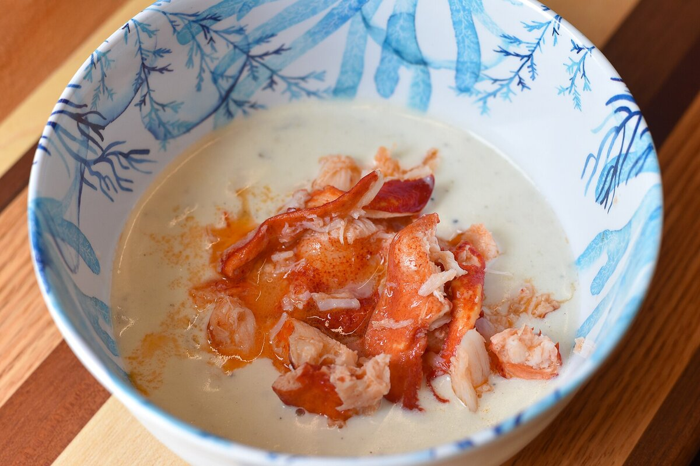

B1 · Food & Dining
Eating Across America
There is no such thing as American food — there are about six of them, and they do not much resemble each other.
Reading
Play the audio and follow along, then read it again on your own. Tap or hover over a highlighted word to see what it means.
Visitors often arrive in the United States expecting the food to be one thing, and are surprised to find it is not a cuisine at all but a collection of regional ones that developed separately and still barely overlap. A meal in Charleston and a meal in Portland have almost nothing in common except the language on the menu.
Barbecue is the clearest example. The word means something specific: meat cooked slowly over wood smoke for many hours, not food grilled quickly over a flame. Every region that takes it seriously does it differently and considers the others wrong. Texas does beef brisket with salt, pepper and smoke, and sauce is optional and slightly suspect. North Carolina does pork with a thin vinegar sauce. Kansas City does a thick sweet tomato sauce and will smoke almost anything. Memphis does ribs, dry-rubbed or wet. These are not variations on a theme; they are separate traditions, and people will argue about them with more energy than they bring to politics.
Tex-Mex is the food of the Texas–Mexico border, and it is not the same as Mexican food, though it grew out of it. It is the source of things many people assume are Mexican — the hard-shell taco, chilli con carne, fajitas, and the use of yellow cheese and cumin, both of which a cook in Mexico City would find peculiar. It is a genuine border cuisine, made by Mexican families living in Texas, and calling it inauthentic misses what it actually is.
The northeast is seafood. In New England that means clam chowder — thick, cream-based, and the subject of a long-running quarrel with Manhattan, which makes it with tomatoes and is regarded locally as an eccentric — along with lobster rolls, which are lobster, a little mayonnaise or butter, and a bun, and which cost what they cost because lobster does.

Soul food comes from the cooking of enslaved African Americans in the South and traveled north with the Great Migration. Fried chicken, collard greens, cornbread, black-eyed peas, macaroni and cheese. It is food built on making excellent use of cheap or unwanted ingredients, which is true of most of the world's best cooking, and it has shaped what the whole country eats far more than is usually acknowledged.
California cooking is the most recent and the most exportable. It is built on the fact that the state grows an enormous share of America's produce, so the ingredients arrive fresh and the cooking gets out of their way. Lighter, vegetable-heavy, heavily influenced by Mexican and East and Southeast Asian cooking, and responsible for the fact that a restaurant anywhere in the world may now describe something as “farm to table”.
And then there is the diner, which is less a cuisine than an institution: open early, open late, laminated menu running to several pages, coffee refilled without being asked. The food is eggs, pancakes, burgers, pie. Nobody claims it is the country's best cooking. It is where you end up at eleven at night in an unfamiliar town, and there is a reason it appears in so many American films.
A useful rule for eating well in the United States is to ignore what a place looks like. Some of the best food in the country is served in buildings that would not pass for restaurants anywhere else — a shed with a smoker behind it, a counter with eight stools, a truck parked in the same spot every day. The queue outside tells you more than the decoration inside.
Key Vocabulary
- cuisine the characteristic cooking of a place or culture
- to overlap to have parts in common
- brisket a cut of beef from the lower chest, suited to long slow cooking
- dry rub a mix of dry spices pressed onto meat before cooking
- border the line where two countries meet
- cumin a warm, earthy spice used in many cuisines
- peculiar strange or unfamiliar
- chowder a thick soup usually made with seafood
- quarrel a long-running disagreement
- enslaved held as property and forced to work without freedom or pay
- collard greens a leafy green vegetable slow-cooked in Southern cooking
- to acknowledge to admit or recognize something publicly
- produce fresh fruit and vegetables
- laminated covered in a protective plastic film
- to refill to fill something again
- stool a seat with no back, often at a counter
Eating Across America — B1 · Food & Dining · Renan the Teacher, English Language Academy · https://renangrossi.github.io/englishclasses/reading/b1/milan-restaurants.html
Interactive Exercises
Practice
Complete each exercise, then click Submit to see your score and an explanation for every answer.
Speaking & Writing
Discussion
There are no right answers here — use these to practice speaking, or write a short answer to each.
- “The queue outside tells you more than the decoration inside.” Is that true where you live?
- The writer defends Tex-Mex against the charge of being inauthentic. When does a food stop being a copy and become its own thing?
- Soul food is described as built on cheap ingredients, like much of the world's best cooking. Does your country's traditional food fit that pattern?
- People argue about barbecue “with more energy than they bring to politics”. Why does food produce such strong loyalty?
- Write about 150 words explaining the regional differences in your own country's cooking to someone who assumes it is all the same.